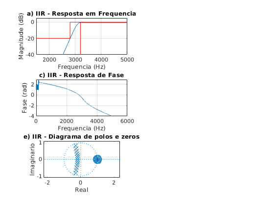
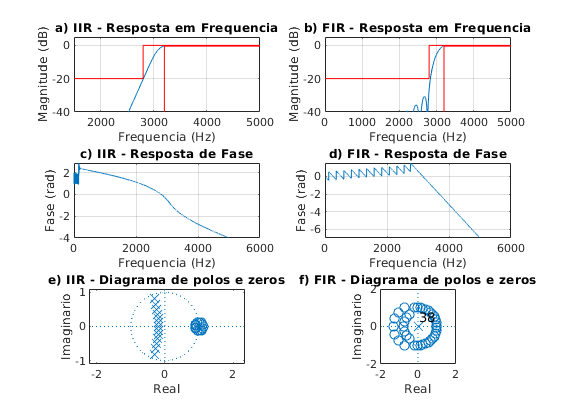

Contents
close all; clear all; clc; ExecutarAjuste = 1;
Especificacoes
Ap = 0.5; As = 20; GdB = 0; fa_espec = 10000; fs_espec = 2800; fp_espec = 3200; wa_espec = 2*pi*fa_espec; wp_espec = 2*pi*fp_espec; ws_espec = 2*pi*fs_espec; Wp_espec = 1; Ws_espec = wp_espec/ws_espec; tetha_s_espec = ws_espec/(wa_espec/2); tetha_p_espec = wp_espec/(wa_espec/2); lambda_s_espec = 2*tan(tetha_s_espec * pi/2); lambda_p_espec = 2*tan(tetha_p_espec * pi/2); Os_espec = lambda_p_espec/lambda_s_espec; Op_espec = 1; % Ajustes delta = 0; if ExecutarAjuste delta = -(2812-2800)/2; end fa = fa_espec; wa = wa_espec; fp = fp_espec + delta; fs = fs_espec + delta; wp = 2*pi*fp; ws = 2*pi*fs; Wp = wp_espec; Ws = wp/ws; tetha_s = ws/(wa/2); tetha_p = wp/(wa/2); lambda_s = 2*tan(tetha_s * pi/2); lambda_p = 2*tan(tetha_p * pi/2); Os = lambda_p/lambda_s; Op = 1;
IIR Butterworth
[n1, Wn1] = buttord(Op, Os, Ap, As,'s'); [b1, a1] = butter(n1, Wn1, 's');
% calculo na mao
epson = sqrt((10^(0.1*Ap))-1);
n = ceil(log(((10^(0.1*As))-1)/epson) / (2*log(Os_espec)));
n = n + 2;
k = 1:n;
pk = (epson^(-1/n))*exp((1j*(2*k+n-1)/(2*n))*pi);
b = 1/epson;
a = poly(pk); a = real(a);
Transformacao de frequencia
LP para HP
syms p;
Np(p) = poly2sym(b, p);
Dp(p) = poly2sym(a, p);
Hp(p) = Np(p) / Dp(p);
pretty(vpa(collect(Hp(p)), 5))
15 15 13 16 12 16 11
(6.4464 10 )/(2.2518 10 p + 2.0256 10 p + 9.1104 10 p
17 10 17 9 17 8 18 7
+ 2.7047 10 p + 5.9004 10 p + 9.9722 10 p + 1.3419 10 p
18 6 18 5 17 4 17 3
+ 1.455 10 p + 1.2712 10 p + 8.8424 10 p + 4.7652 10 p
17 2 16 15
+ 1.887 10 p + 4.9324 10 p + 6.4464 10 )
Normalizando de acordo com p^n
syms s;
Hs(s) = collect(subs(Hp(p), lambda_p/s));
pretty(vpa(Hs(s), 3))
[N, D] = numden(Hs(s));
bs = sym2poly(N);
as = sym2poly(D);
an = as(1);
bsn = bs/an;
asn = as/an;
Hsn(s) = poly2sym(bsn, s)/poly2sym(asn, s);
pretty(vpa(Hsn(s), 5))
201 12 202 11 203 10 204 9
#1/(#1 + 2.63 10 s + 3.16 10 s + 2.5 10 s + 1.46 10 s
204 8 205 7 205 6 206 5
+ 6.58 10 s + 2.36 10 s + 6.84 10 s + 1.6 10 s
206 4 206 3 206 2 206
+ 2.96 10 s + 4.26 10 s + 4.5 10 s + 3.14 10 s
206
+ 1.1 10 )
where
200 13
#1 == 1.1 10 s
13 13 12 11 10 9 8
s /(s + 24.013 s + 288.32 s + 2285.0 s + 13307.0 s + 60039.0 s
7 6 6 5 6 4
+ 215699.0 s + 624299.0 s + 1.4559 10 s + 2.7036 10 s
6 3 6 2 6 6
+ 3.8895 10 s + 4.1117 10 s + 2.869 10 s + 1.001 10 )
Transformando em Z (bilinear)
syms z;
aux = 2*((z-1)/(z+1));
Hz(z) = collect(subs(Hs(s), aux));
pretty(vpa(Hz(z),3))
[Nz,Dz] = numden(Hz(z));
bz = sym2poly(Nz);
az = sym2poly(Dz);
an = az(1);
bzn = bz/an;
azn = az/an;
Hzn(z) = poly2sym(bzn,z) / poly2sym(azn,z);
pretty(vpa(Hzn(z),5))
203 13 205 12 205 11 206 10
(8.98 10 z - 1.17 10 z + 7.0 10 z - 2.57 10 z
206 9 207 8 207 7 207 6
+ 6.42 10 z - 1.16 10 z + 1.54 10 z - 1.54 10 z
207 5 206 4 206 3 205 2
+ 1.16 10 z - 6.42 10 z + 2.57 10 z - 7.0 10 z
205 203 208 13 208 12
+ 1.17 10 z - 8.98 10 )/(2.6 10 z + 7.75 10 z
209 11 209 10 209 9 209 8
+ 1.48 10 z + 1.89 10 z + 1.84 10 z + 1.37 10 z
208 7 208 6 208 5 207 4
+ 8.1 10 z + 3.76 10 z + 1.37 10 z + 3.81 10 z
206 3 206 2 205 203
+ 7.94 10 z + 1.16 10 z + 1.07 10 z + 4.63 10 )
13 12 11 10
(0.000034576 z - 0.00044948 z + 0.0026969 z - 0.0098886 z
9 8 7 6 5
+ 0.024722 z - 0.044499 z + 0.059332 z - 0.059332 z + 0.044499 z
4 3 2
- 0.024722 z + 0.0098886 z - 0.0026969 z + 0.00044948 z
13 12 11 10 9
- 0.000034576)/(z + 2.9853 z + 5.6831 z + 7.2858 z + 7.0854 z
8 7 6 5 4
+ 5.2939 z + 3.1209 z + 1.4468 z + 0.52602 z + 0.14696 z
3 2
+ 0.030594 z + 0.0044727 z + 0.00041083 z + 0.000017848)
Inicio PLOT (filtro IIR)
figure(1) subplot(321) escala = fa/2; [hz, wz] = freqz(bzn, azn, linspace(0, pi, 10000)); plot(wz/pi*escala, 20*log10(abs(hz))); xlim([1500 5000]); ylim([-40 5]); title('a) IIR - Resposta em Frequencia') grid on hold on plot([0,fs_espec,fs_espec,10000],[-As,-As,0,0], 'r') plot([fp_espec,fp_espec,10000],[-60,-Ap,-Ap], 'r') xlabel('Frequencia (Hz)'); ylabel('Magnitude (dB)'); subplot(323) plot(wz/pi*escala, unwrap(angle(hz))/pi); grid on; title('c) IIR - Resposta de Fase') xlabel('Frequencia (Hz)'); ylabel('Fase (rad)'); subplot(325) zplane(bzn, azn); title('e) IIR - Diagrama de polos e zeros') xlabel('Real'); ylabel('Imaginario');
Calculos filtro FIR
% Projeto filtro 1 % LP - (fa = 10000 Hz, f1 = 2800 Hz; f2 = 3200 Hz, Ap = 0.5 dB, As = 20 dB, GdB = 0 dB) clear all; ExecutarAjuste = 1;
Especificacoes
fa = 10000; fs = 2800; fp = 3200;
Ap = 0.5; As = 20; GdB = 0;
wp = fp/fa*(2*pi); ws = fs/fa*(2*pi);
wc1 = sqrt(wp*ws); % media geometrica
Dw1 = wp - ws;
G0 = GdB;
Projeto inicial
Dw = Dw1; wc = wc1; Ask = As; if ExecutarAjuste Ask = Ask + 9; % Ajuste BP end betha = 0.5842*(Ask-21)^0.4 + 0.07886*(Ask-21); M1 = ceil((Ask - 8)/(2.285*Dw)+1); M = M1; % M = 20; % G0 = -5.5 + 1; if ExecutarAjuste % primeiro ajuste G0 = 0.295; % db % segundo ajuste M (n/2) wp2 = 0.6196*pi; ws2 = 0.5813*pi; Dw2 = wp2 -ws2; M2 = ceil(M1*Dw2/Dw1); % nova ordem do filtro 2*M2 M = M2; % ajuste deslocamento wc2 = wc1 - ((0.0037+0.0013)/2)*pi; wc = wc2; end N = 2*M+1; betha = 0.5842*(Ask-21)^0.4 + 0.07886*(Ask-21); wk = kaiser(N, betha)'; % wk = chebwin(N, As)'; % wk = gausswin(N, 1/As)'; % wk = tukeywin(N)'; % wk = taylorwin(N)'; k = 1:M; % HP bi = -sin(wc*k)./(pi*k); b0 = 1-wc/pi; b = [flip(bi) b0 bi]; b = b.*wk*10^(-G0/20); % janela de keiser
subplot(322) escala = fa/2; [h, w] = freqz(b, 1, linspace(0,pi,10000)); % plot(w/pi, abs(h)); grid on; plot(w/pi*escala, 20*log10(abs(h))); grid on; hold on; title('b) FIR - Resposta em Frequencia') ylim([-40 5]) Amin = 80; plot([0,fs,fs,fa/2],[-As,-As,0,0], 'r') plot([fa/2,fp,fp,],[-Ap,-Ap,-80], 'r') xlim([0 fa/2]) xlabel('Frequencia (Hz)'); ylabel('Magnitude (dB)'); subplot(324) plot(w/pi*escala, unwrap(angle(h))/pi); grid on; title('d) FIR - Resposta de Fase') xlabel('Frequencia (Hz)'); ylabel('Fase (rad)'); subplot(326) zplane(b, 1); axis([-2 2 -2 2]) title('f) FIR - Diagrama de polos e zeros') xlabel('Real'); ylabel('Imaginario');